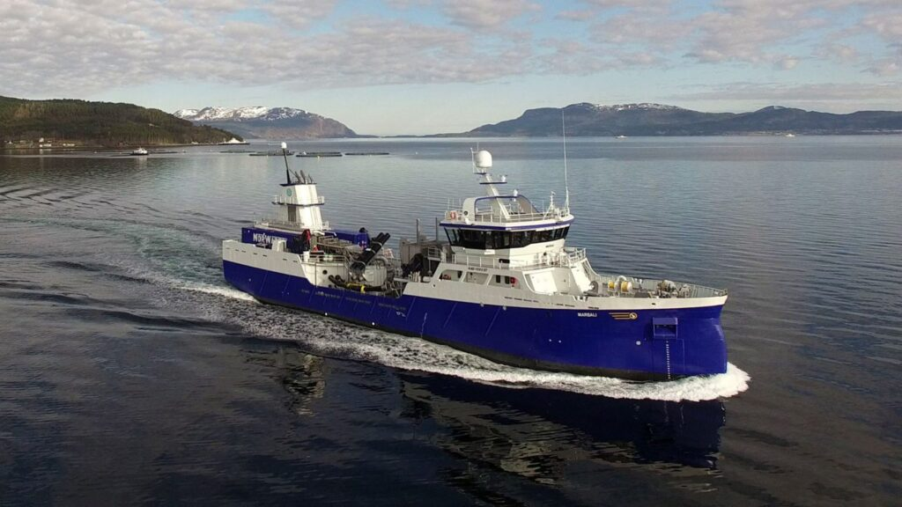
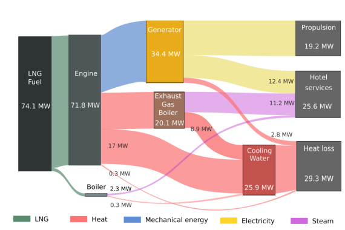
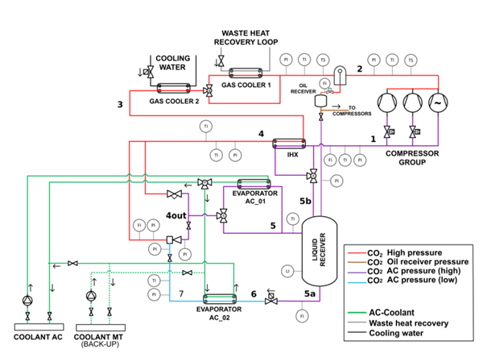

Freezing, cooling, heating and ventilation
On board passenger and fishing ships and other marine merchant and transport vessels there is a need for heating, ventilation, air conditioning (HVAC) as well as cooling and freezing for various purposes.
Energy demand
For cruise ships, the energy demand of the hotel facilities onboard constitutes on average 40% of the ship’s total energy use and differs significantly from other types of ships where the propulsion system is the dominant energy consumer. Air-conditioning and provision of refrigeration are the main consumers. Whereas land-based operation and production may utilize alternative and renewable energy sources, marine vessels still depend almost entirely on hydrocarbon-based fuels. This leads to a high carbon footprint per passenger in addition to harmful air pollution in major cruise ports worldwide. For the fishing fleet, a major part of the energy is spent on the refrigeration of the catch. Development and implementation of systems for increased energy efficiency are therefore of utmost importance to reduce the environmental impact and meet the climate goals.
Chilling and freezing onboard fishing vessels
Onboard conservation is important for preserving quality and prolonging shelf life of the fish, and there is a wide range of methods applied. In order to preserve quality and shelf life of the fish, most fishing vessels have systems and methods for keeping the fish cold. What kind of system or method is employed will vary by both vessel size and target species. Across all groups, the three most common onboard preservation methods for Norwegian vessels are chilling in refrigerated seawater (RSW), ice/slurry/passive chilling and freezing. The following sections are descriptive for Norwegian vessels in particular.
Sankey diagram showing the relative size of common onboard conservation methods employed by Norwegian fishing vessels, by catch volume. Based on catch data for 2021
RSW systems are typically employed on purse seine vessels that target pelagic species such as mackerel and herring. For some species such as blue whiting, the system is denoted RFW since freshwater is used instead of seawater. There are approximately 70 active vessels within this fleet segment in Norway, ranging in size (length) from 40 to almost 90 meters. In addition, there are some smaller vessels employing RSW systems, but the vessels must be of a certain size due to size of the systems. A RSW system consists of one or more refrigeration system, RSW tanks, pumps and piping for circulation. The caught fish is pumped from the sea into one (or more) of the RSW tanks where it is mixed with prechilled seawater. The catch is then rapidly chilled down towards target temperature, usually in the range -1,5 – 0 °C, which is maintained until harbour is reached. Typical duration of a fishing trip for such a vessel is between 3-7 days. Depending on vessel size there are usually between 6 to 12 RSW tanks with a total capacity between 600 to almost 3000 m3. The refrigeration systems are usually designed with a specific refrigeration capacity per m3 of approx. 1,1 kW/m3, meaning that refrigeration capacities range from shy of 1 MW to above 3 MW. Ammonia (R717) is then typically employed in these systems, using large screw compressors. Smaller RSW systems employing CO2 (R744) has been introduced recently, enabling smaller vessels (down to 10 m) to switch from traditional chilling with ice to RSW. RSW chilling is the most common method for onboard conservation going by catch volume.

The well boat «Marsali» constructed by Aas Mek, Norway and owned by the Scottish shipping company Migdale Transport Ltd. The vessel is equipped with a RSW-system from PTG Norway and allows transportation of live fish in a closed system.
Another segment of the sea-going fleet consists of larger vessels fishing with bottom trawl and auto-line. In numbers there are about 35 of such trawlers and around 20 large autoliners. These vessels spend many weeks on the fishing grounds, targeting mainly whitefish species such as cod and haddock. Freezing equipment and frozen storages are then employed onboard to conserve the catches. Typically, vertical plate freezers are used for freezing whole fish, while horizontal plate freezers are employed on board vessels which fillet their catch. A few vessels have quick freezers for single frozen fillets or other products. Freezing capacity for the cod trawlers ranges between 20 to 100 tonnes/day. This is accomplished by having several plate freezers in the factory. As an example, a vessel with a daily freezing capacity of 72 tonnes have installed 8 vertical plate freezers with 32 stations each. The fish is headed and gutted, filled into the freezers which are then started sequentially to avoid large peak heat loads. Fillets are either packed in an interleaved pattern or frozen as standardized blocks. In addition to serve the refrigeration demand for the freezing equipment, the refrigeration systems must also cover the demand required to maintain appropriate temperature in the onboard frozen storages. These range in size between 500 to above 2000 m3 depending on size of the vessel.
While the previously described fleet segments covers the majority of the landed fish volume, the by far largest group of vessels in numbers are smaller vessels (<15 m) found in the coastal fleet. While some of these may have refrigeration systems to conserve the catch, it is more typical to use ice or slurry brought from onshore or leave the catch in tanks filled with seawater. These vessels make shorter trips, usually back and forth within a day, and delivers fresh, whole gutted fish. There may be several reasons why such vessels don’t have refrigeration equipment. Refrigeration equipment demands a certain amount of space onboard, which then would displace some of the volume needed for the catch itself. For this reason, there aren’t many available refrigeration solutions on the market available for smaller vessels. The aforementioned CO2 RSW system is an example of a recently introduced solution. Secondly, the short trips and ability to retard the temperature of the catch by current means may for some fishers be sufficient, although there is an undisputable relation between temperature and quality of fish. In order to see a change in conservation methods for this segment, it is necessary to strike a balance between the advantages of introducing refrigeration systems (quality) versus the disadvantages (capital and running costs, space demand).
Other conservation methods include methods that are specific for particular species and are found on some few specialized vessels. For example, for freezing of snow-crab clusters is typically done by brine freezers. Energy efficiency of refrigeration systems and use of climate friendly refrigerants are important topics, and perhaps even more so for systems on board vessels. Refrigerant leakage rates are usually higher compared to onshore systems due to constant motion/vibrations, and lack of opportunity to fix any damages while at sea. For systems employing non-natural refrigerants, this adds to direct emissions. Furthermore, electricity for the refrigeration system stems from the vessels fuel, which in most cases are MGO/HFO carrying a high carbon emission factor – and is costly. Therefore, improving energy efficiency and transitioning towards natural refrigerants are important objectives for shipowners.
| Operation | Efficient compressors and systems | Heat and cold recovery |
|---|---|---|
| Prevent that equipment is on and running when not necessary/not in use | Screw compressors regulated with frequency converters instead of slide valves | Heat from engine or from the high-pressure side of refrigeration system can be used, either directly or upgraded in a heat pump |
| Measure and survey the energy use | Efficient fans in cold rooms (fans add heat to the cold room) | Cold recovery is not so common, but a possibility is to heat exchange outgoing cold water with incoming warm water if the water must be changed. Another possibility is to recover the cold from ice which has been used to chill the fish (at the fish processing plant after loading) |
| Prevent the ambient from heating up cold equipment (minimizing door openings and enough isolation) | Efficient defrosting, long enough to melt the ice, but not overheating the evaporators | |
| Systems for purging air and remove water from the refrigerant, which can reduce heat transfer in condenser and evaporator |
Examples on how to improve energy efficiency and reduce emissions.
Heating onboard fishing vessels
For a fishing vessel, its diesel engine’s energy efficiency is only at 35–40%, with more than half of the energy being wasted as exhaust heat taken away by jacket water, cooling air and exhaust gas. This heat can be used onboard for hot tap water, space heating, and processing. Many fishing vessels also have refrigeration systems where it is possible to utilize the warm side for heating demands.
Up to 2010 only a minor part of new build ships was installed with heating systems utilizing these heat sources. Instead, they use electrical power (produced onboard with low efficiency) to meet the heating demands onboard.
After 2010, larger fishing vessels are built with heating system utilizing the surplus heat sources onboard, but it’s more costly and many smaller boats can’t afford the extra investment costs.
HVAC&R onboard cruise ships
The Figure shows an energy flow diagram for a large cruise ship sailing in the Mediterranean during summer months. As seen, the demand for electric and thermal power for the hotel services (HVAC, provision refrigeration, steam and hot water production for space heating, domestic hot water, laundry and galleys) constitute almost 60% of the ships’s total demand. The electric power consumption (12 MW) is dominated by AC cooling and ventilation (around 10 MW) while for provision cooling and freezing it is below 0.5 MW. The systems are normally designed to cope with an outside temperature of 45 °C, an ambient inside temperature of 25 °C, and cooling water of 32-36 °C (fresh or sea water temperature).

Example of an energy flow diagram of a LNG fueled cruise ship
HVAC systems – must be able to meet passenger comfort requirements which includes little noise emission. At the same time, they should be designed to be as compact as possible, given the limited space available. The most common design for air treatment includes a decentralized ventilation unit, the so-called Air Handling Unit (AHU) followed by a second treatment stage, either located directly at the cabin or inside the duct system. The AHU, which supplies several cabins or areas with fresh air, is usually equipped with an enthalpy exchanger, which allows energy recovery from the exhaust air. The preconditioned air is further heated or cooled in air-water fin heat exchangers to meet the load requirements.
Cooling is made by chilled water from AC compressors. Almost all new installations on passenger ships are indirect systems, producing chilled water of around 6–10 °C. The most commonly used refrigerant has been R134a, with a refrigerant charge of up to 7000 kg (12 MW). The use of indirect AC systems with chilled water circulation also enables the use of “free-cooling” or pre-cooling during parts of the year when the sea water is cold enough. Heating is supplied with hot water produced from waste heat recovery, or by electrical heaters. In future hybrid propulsion systems, relying partly on batteries, less waste heat is available for domestic hot water production. Heat recovery from other parts of the ships becomes more important, for example from the refrigeration system. The high temperatures on the high-pressure side make CO2 systems attractive for the integrated production of refrigeration and domestic hot water, which is already established for supermarket applications. The figure below shows a concept for co-production of AC cooling and hot water onboard a passenger/cruise ship.

Example of a proposed design for an R744 ejector supported AC-system for maritime application
Heat pumps – The implementation of heat pumps onboard ships is scarce. However, with ongoing hybridisation/electrification the interest in heat pumps, or refrigeration systems with heat pump functionality are increasing. Heat pumps enable the recovery of waste heat sources at a lower temperature, such as low-temperature cooling water from engines or batteries, or sewage water (grey water). When the ship is connected to shore power or operating on batteries, a heat pump will lower the required shore power/battery capacity by eliminating the need for or supporting the use of an electrical boiler.
Natural refrigerants are slowly entering the cruising shipping sector as well. CO2 is the preferred choice due to its non-flammability and non-toxicity, but the introduction is limited mainly due to regulatory barriers.
- In 2018, GEA installed the first-ever CO2 refrigeration system onboard a cruise ship – 2000-passenger cruise vessel, owned by P&O Cruises, part of Carnival Corporation. The transcritical modular unit with multiple GEA bock compressors provides cooling for the ship’s food and beverage refrigeration units.
- In 2022, Scandlines’ announced that their new zero-emission freight ferry will be equipped with a CO2 chiller unit delivered by Teknotherm.